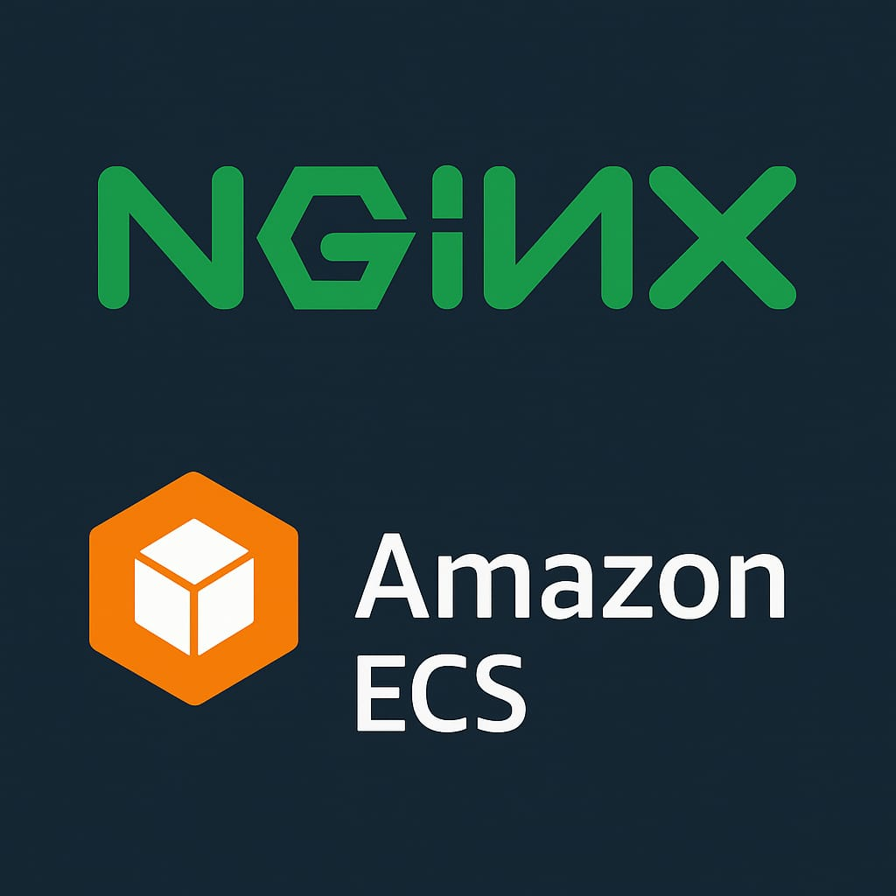

Nginx on Amazon ECS

Project Overview:Deploying nginx on ECS Fargate with ALB & CloudWatch Monitoring
To deploy a lightweight, scalable web application (nginx) using Amazon ECS with Fargate, expose it securely via an Application Load Balancer (ALB), and monitor its performance using Amazon CloudWatch. This project demonstrates cloud-native architecture, container orchestration, and observability best practices.
Steps taken to complets this project :
1. Create Security Groups
.png)
- Inbound rule: Allow HTTP (TCP port 80) from 0.0.0.0/0 — this makes the ALB publicly accessible.
- Outbound rule: Allow all (default) — ensures ALB can forward traffic to ECS tasks.
2. Create a Target Group
.png)
- Target type: IP — required for Fargate tasks.
- Protocol: HTTP
- Port: 80
- Health check path: / — checks if nginx is responding.
- VPC: Select the same VPC as your ECS tasks.
3. Create an Application Load Balancer
.png)
- Go to EC2 → Load Balancers → Create
- Choose Application Load Balancer
- Name: alb-nginx
- Scheme: Internet-facing
- Listener: HTTP on port 80
- Select VPC and public subnets
- Assign the security group you created
4. Create ECS Cluster
.png)
- Go to ECS > Clusters > Create Cluster
- Choose “Networking only” (Fargate)
- Name it nginx-cluster
5. Create Task Definition
.png)
- Launch type: Fargate
- Task role: ecsTaskExecutionRole (or custom role with logging permissions)
- Container name: nginx
- Image: nginx (official Docker image)
- Port mappings: 80
- CPU: 256 or 512
- Memory: 512 or 1024
- Log configuration: Use awslogs to send logs to CloudWatch
6. Create ECS Service
.png)
.png)
.png)
- Go to ECS → Cluster → Services → Create
- Launch type: Fargate
- Task definition: grafana-task
- Number of tasks: 1
Networking:
- VPC: same as ALB
- Subnets: public
- Security group: same as ALB
Load balancer:
- Type: Application Load Balancer
- Select alb-nginx
- Listener: port 80
- Target group: TG-nginx
- Click Create Service
Once deployed, your nginx container will be accessible via the ALB DNS name.
7. Create CloudWatch Dashboard
.png)
.png)
.png)
.png)
.png)
.png)
.png)
.png)
.png)
.png)
-Go to CloudWatch > Dashboards > Create dashboard
- Name it nginx-dashboard
Add widgets:
- Line widget for CPUUtilization
- Line widget for MemoryUtilization
Metrics path:
- ECS > Per-Task Metrics > Cluster: nginx-cluster > Service: nginx-service
This gives you real-time visibility into resource usage.